Detail
Man
黑客松比賽-魚群辨識Github
第一次參加黑客松比賽，一連三天在光華三創園區，主題是海洋永續發展
官網:http://www.accupass.com/go/fishackathontpe2016
我們開發出一套魚種辨識系統 可以自動辨識魚種且過磅測量魚的重量，並且自動上傳到web server做分析統計與資料呈現
 季軍
季軍
 透過攝影機即時拍攝即時辨識魚種，以及透過感測器取得重量
透過攝影機即時拍攝即時辨識魚種，以及透過感測器取得重量
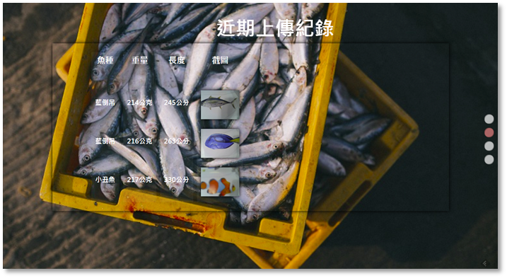 透過網路上傳雲端儲存，使用者可利用任何可上網裝置進行瀏覽
Demo影片
2016年4月-2016年4月
馬場預約系統
兼差做的訂單管理網頁 使用Asp.Net MVC Server平台使用微軟Azure
 登入介面
登入介面
 當周預約行事曆總表
當周預約行事曆總表
 新增訂單-首先查詢顧客，可以利用名字或是電話
新增訂單-首先查詢顧客，可以利用名字或是電話
 新增訂單-訂單選項
新增訂單-訂單選項
 其他管理介面
其他管理介面
2016年3月-持續中
日文輸入法打中文小工具點我參觀
在玩3DS的時候跟朋友組隊想要打中文，結果只有日文輸入法，於是我想到可以寫一個爬日文字典網頁的小工具，去幫我們快速查出要打那些平假名可以組合成中文。
 打開3DS的輸入法
打開3DS的輸入法
 輸入網頁上的日文假名
輸入網頁上的日文假名
 成功顯示中文
成功顯示中文
搜尋引擎WebAPI
幫忙別人的圖書館網頁專案開發的小module，我的工作是把搜尋引擎的library(龍捲風科技)利用ASP.Net的WebAPI方式包一層，透過Json傳遞的方式給Font-End使用，另外還額外做了DEMO程式來展示WebAPI
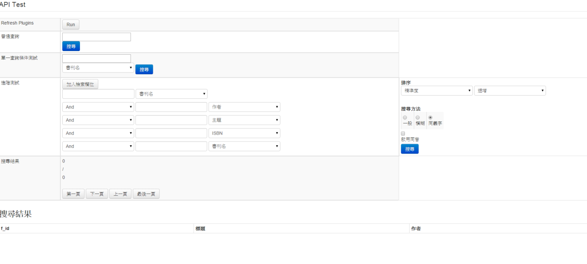 登陆页
RealSense SDK開發 – 解鎖App
公司內部法國人的想法，我把它實做出來，就是模擬解鎖的APP，用Intel 3d camera的SDK，SDK會給我手指關節的資訊，我把它串到我的APP上面，APP的功能就是手機的解鎖。
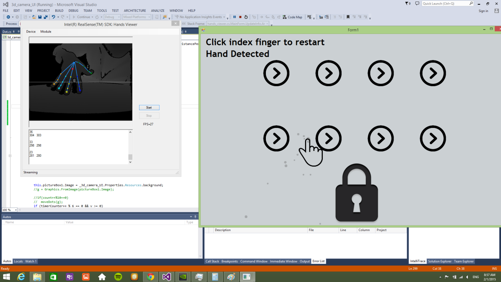 當時忘記錄影 只有截圖
3D Camera Testing tool
測量camera的精準度，用它算出來的位移量跟實際用尺算出來位移量的做比較。
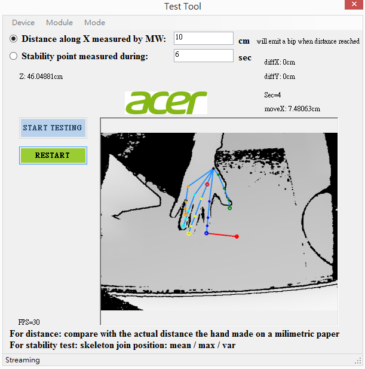 Tool介面
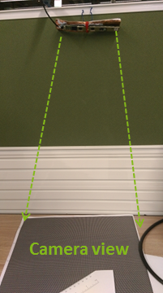 實體
計算準確度
我的鐵路自動通知App
有一段時間在做案子，每天可能10點多才會下班，因為火車時間錯過一班就要等很久，因此我開發了一個APP來提醒我最近一班的火車時間，這樣我就可以決定要用跑的，還是慢慢收拾走去火車站，原理很簡單，我去對時刻表網頁http://twtraffic.tra.gov.tw/twrail/，丟參數進行GET抓回一堆html原始碼進行解析，因為我懶得使用第三方library(XML parser)， 所以我手動硬幹用字串處理來把資料抽出來，
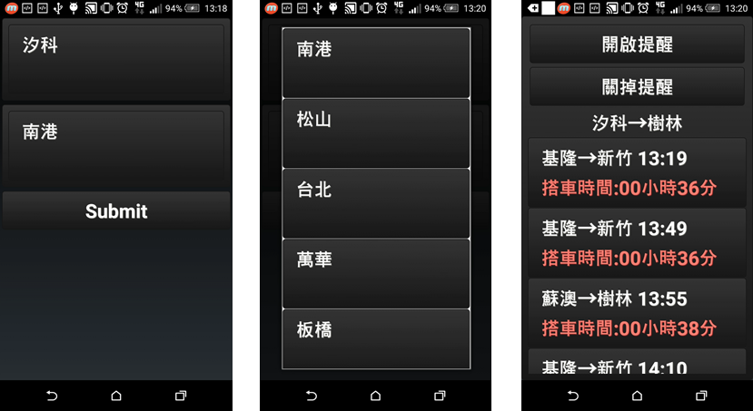 介面
介面
公司打卡小工具
我是個懶惰的人，公司需要每天打卡紀錄做哪些專案，沒打會被系統寄信，所以我花費比打卡多好幾倍的時間來開發打卡幫手，一次填一個月分XD；公司打卡的網頁不太嚴謹，沒有防機器人的code，1秒內post幾百筆資料還照單全收，用wireshark觀察一下就發現不難實作。
beta版
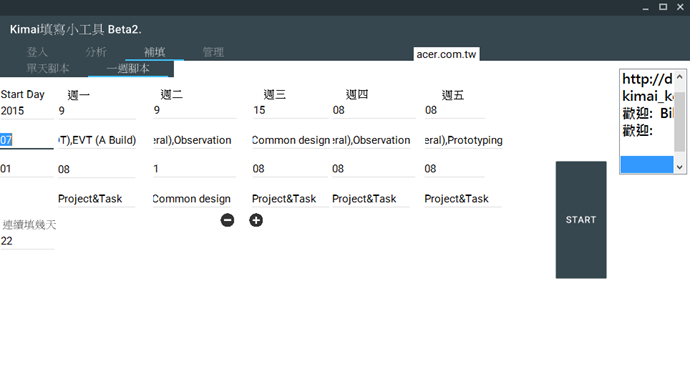 實際的版本
自幹BIOS遊戲框架
想寫專利，突然想到BIOS可以畫出UI，那麼做一個遊戲應該也是可以的，所以我自己硬幹手工刻了一個遊戲框架，沒有OO的設計方式有點麻煩，成果我錄了影片。太高深的圖像演算法不好弄，因為沒有浮點數可以用，等專利過了再把它做完整。
在bios底下實作flappy bird
影片: https://drive.google.com/file/d/0Bz7RR3lVHoLnWDliMlgwVFVhTUU/view?usp=sharing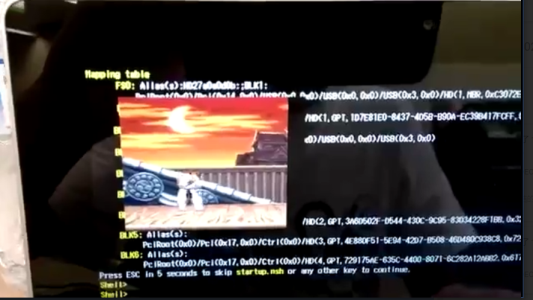 在bios底下實作快打旋風
影片: https://drive.google.com/file/d/0Bz7RR3lVHoLncFhObWtiOXhQcGc/view?usp=sharing自動貓咪餵食器
簡單講就是用Arduino＋ethernet(網路模組) + servo(馬達) + RFID + weight sensor(重量感測器)來做一個餵食機，餵食機可以連上網際網路，也就是我架好的server，它會一直去polling server，根據server給它的資訊去做行為，也會一直更新server的資料。用RFID辨識正在吃飼料的寵物，重量感測器回報目前飼料的剩餘量。 手機app端也去向server要資料與設定資料這樣。
架構
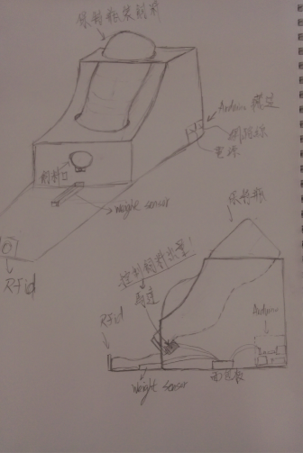 設計圖
 遠端App畫面
遠端App畫面
實機圖
影片: https://drive.google.com/file/d/0Bz7RR3lVHoLnU29aTnFEQnlBMUk/view?usp=sharingWin7 preload tool
Intel最新的CPU不內建USB2.0的控制器，可是win7只內建USB2.0控制器的driver，所以你灌了win7就發現什麼USB裝置都不能用；解決之道就是BIOS開發一個tool，tool切一個partition裡面塞入USB3.0的控制器driver，安裝win7時再把它載入即可。 簡單說就是開發BIOS的tool，用C語言刻UI，看demo影片
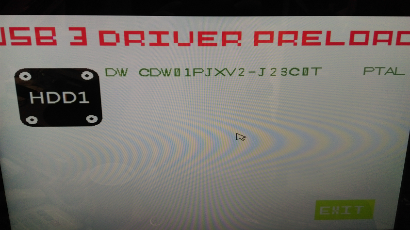 Tool介面
影片: https://drive.google.com/file/d/0Bz7RR3lVHoLnSzRHbTQ5MThGZUE/view?usp=sharing求婚驚喜小遊戲
最近有認識的人想求婚，之前在網路上看到有工程師寫遊戲給女友玩，破關之後就是求婚的訊息，我也想做一個類似的，剛好學習新的cocos2d引擎還有複習C++與design pattern，順帶一提圖是我自己畫的，且尚未完成。
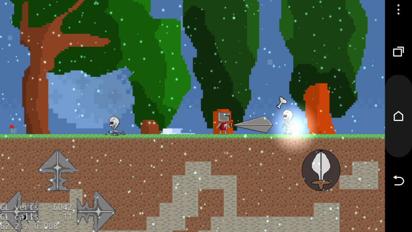 遊戲畫面1
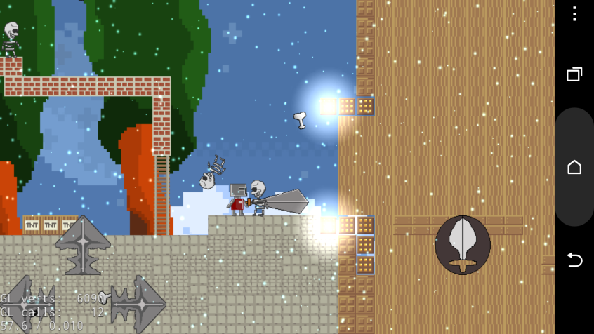 遊戲畫面2